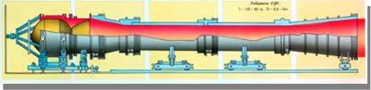

Направления работ НПО "Исрка" по ракетно-космической тематике:
- РДТТ маршевных ступеней ракет
- РДТТ специального назначения
- Корпуса РДТТ из композиционных материалов
- Сопловые блоки с выдвигаемыми насадками для РДТТ
- Выдвигаемые сопловые насадки для ЖРД
- РДТТ для разгонных блоков космических аппаратов
- Эластичные шарниры для управляющих сопловных блоков
- Стендовое и испытательное оборудование для отработки РДТТ
- Ракеты для активного воздействия на гидрометеорологические процессы
Первые отечественные твердотопливные межконтинентальные ракеты
Разработка маршевых РДТТ для первой отечественной МБР 8К98 проведена в 1961-1968 годах в тесном сотрудничестве с ОКБ-1 (главный конструктор С. П. Королев).
В 1972 году была принята на вооружение ракета 8К98П (главный конструтор П. А. Тюрин).
В ходе создания маршевых РДТТ I и II ступеней были разработаны основные принциаы конструирования твердотопливных двигателей, высокоэффективных органов управления, технологии изготовления корпусов и зарядов из смесей твердых топлив.
В двигателе 15Д94 третьей ступени ракеты 8К98П был применен ряд новых конструктивных решений:
- комбинированный металлостеклопластиковый корпус
- заряд, полученный методом литья непосредственно в корпус двигателя
- применены новые теплозащитные иэрозионностойкие материалы
Двигатель 15Д94 по своим энергомассовым характеристикам в то время являлся самым совершенным в нашей стране крупногабаритным твердотопливным двигаталем.
Эксплуатация ракетных комплексом продолжалась более 20 лет.
Предприятие имеет 50-летний опыт создания и отработки ракетных двигателей на твердом топливе (РДТТ), газогенераторов для ракето-космических систем, является в этой отрастиодним из ведущих предприятий страны, участвуя практически во всех основных программах создания новых ракетных комплексов с РДТТ (в том числе программах создания МБР "Тополь-М" т БРПЛ "Булава").
НПО "Искра" имеет развитую производственную и экспериментальную базы, позволяющие производить разработку, испытания и серийное изготовление надеждых двигателей различеного назначения в сжатые сроки.
Запуск "Булавы"
ПУ с ракетой РТ-2ПМ2 "Тополь-М" на боевой позиции
Двигательная установка второй ступени и ПАД ракеты 3М17
Двигатели второй и третьей ступеней ракеты 3М65 комплекса Д19 системы вооружения "Тайфун"

Двигатель третьей ступени в цехе
РДТТ второй ступени
Ракета 3М65 в сборочном цехе
Двигатели третьей ступеней ракеты 15Ж60 и 15Ж61
Боевой железнодорожный ракетный комплекс
Старт ракеты 15Ж61
БЖРК на стартовой позиции
Противоградное изделие "Алан"
Предназначено для воздействия на градовые облака с целью защиты сельскохозяйственных культур от градобитий, а также может использоваться в работах по обеспечению увеличения осадков. Принципиальное отличие «Алана» от аналогов -введение противоградового реагента непосредственно в твердое топливо. Совмещение шашки активного дыма и заряда твердого топлива в одном элементе позволило, по заключению Росгидромета, достичь высокой эффективности воздействия на градовые процессы, благодаря точности, оперативности и массированности их засева. Для ПГИ «Алан» созданы ручная и автоматизированная пусковые установки
РДТТ разгонных блоков космических аппаратов
На базе технологий и конструкций, отработанных при создании боевых ракет, НПО «ИСКРА» создан ряд проектов РДТТ для использования в качестве разгонных блоков (межорбитальных буксиров) космических аппаратов. Разрабатываемые двигатели ориентированные на РН легкого класса, создаваемые в рамках конверсионных программ МБР и БРПЛ («Стрела», «Днепр», «Воздулшый старт», «Ишим»).
Ракетно-космическая система "Энергия-буран"
В состав ракеты-носителя «Энергия» для ракетно-космической системы «Энергия-Буран» входит 58 разработанных НПО «ИСКРА» твердотопливных двигателей семи разновидностей функционального назначения. Высокая надежность РДТТ подтверждена в условиях реальных пусков РН «Энергия» 15 мая 1987 года и РКС «Энергия-Буран» 15 ноября 1988 года.
Стендовое и испытательное оборудование для отработки РДТТ
Для отработки конструкции и характеристик раздвижения сопел в НПО "Искра" была создана универсальная испытательная база, включающая комплекс стендов и стендовых установок с целью исследования процесса раздвижки. Для проведения ОСИ двигателей с имитацией высотных условия их работы НПО "Искра" в содружестве с организациями отрасли созданы высокоэкономичные устройства для понижения давления вокруг сопла -газодинамические трубы, которые не требуют для своей работы дополнительных затрат энергии, так как для создания разрежения используется инетическая энергия высокоскоростной струи продуктов сгорания, истекающих из испытуемого РДТТ.
Сопловые блоки с выдвигаемыми насадками
НПО "ИСКРА" имеет многолетний опыт создания раздвижных сопел для ракетных двигателей различеного нзначения и является мировым лидером в этом направлении двигателестроения.
Сопловые блоки с телескопическими складываемыми насадками (раздвижные сопла) разрабатываюся в НПО "Искра" с начала 70-х годов и внедрены в ряд РДТТ высотных ступеней ракет. Применяются сопла с одним и двумя выдвигаемыми насадками.
В результате внедрения раздвижных сопел эффективность ракетных комплексов повышена на 10-15% при существенном сокращенни габаритов маршевых двигателей ступеней ракет.
В конструкции раздвижных сопел заложены оригинальные технические решения, обеспечивающие выдвижение и фиксацию насадков в рабочем положении, как и до запуска двигателя, так и в процессе его работы.
В качестве конструкционного материала насадков используются углерод-углеродные композиционные материалы (УУКМ), имеющие уникальные физико-механические и теплофизические характеристики при высокой температуре.
Предприятие располагает развитой производственной инфраструктурой, обеспечивающей весь цикл создания раздвижных сопел и насадков, включая проектирование, испытание, серийное изготовление.